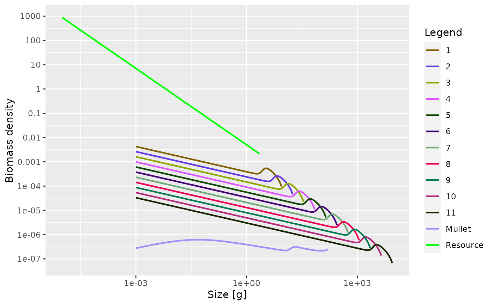

![[Experimental]](figures/lifecycle-experimental.svg)
Takes a MizerParams object and adds additional species with given parameters to the ecosystem. It sets the initial values for these new species to their steady-state solution in the given initial state of the existing ecosystem. This will be close to the true steady state if the abundances of the new species are sufficiently low. Hence the abundances of the new species are set so that they are at most 1/100th of the resource power law. Their reproductive efficiencies are set so as to keep them at that low level.
addSpecies(
params,
species_params,
gear_params = data.frame(),
initial_effort,
interaction
)Arguments
- params
A mizer params object for the original system.
- species_params
Data frame with the species parameters of the new species we want to add to the system.
- gear_params
Data frame with the gear parameters for the new species. If not provided then the new species will not be fished.
- initial_effort
A named vector with the effort for new fishing gear introduced in
gear_params. New gear for which no effort is set via this vector will have an initial effort of 0. Should not include effort values for existing gear.- interaction
Interaction matrix. A square matrix giving either the interaction coefficients between all species or only those between the new species. In the latter case all interaction between an old and a new species are set to 1. If this argument is missing, all interactions involving a new species are set to 1.
Value
An object of type MizerParams
Details
The resulting MizerParams object will use the same size grid where possible, but if one of the new species needs a larger range of w (either because a new species has an egg size smaller than those of existing species or a maximum size larger than those of existing species) then the grid will be expanded and all arrays will be enlarged accordingly.
If any of the rate arrays of the existing species had been set by the user to values other than those calculated as default from the species parameters, then these will be preserved. Only the rates for the new species will be calculated from their species parameters.
After adding the new species, the background species are not retuned and
the system is not run to steady state. This could be done with steady().
The new species will have a reproduction level of 1/4, this can then be
changed with setBevertonHolt()
See also
Examples
params <- newTraitParams()
species_params <- data.frame(
species = "Mullet",
w_inf = 173,
w_mat = 15,
beta = 283,
sigma = 1.8,
k_vb = 0.6,
a = 0.0085,
b = 3.11
)
params <- addSpecies(params, species_params)
#> No h provided for some species, so using f0 and k_vb to calculate it.
plotSpectra(params)
